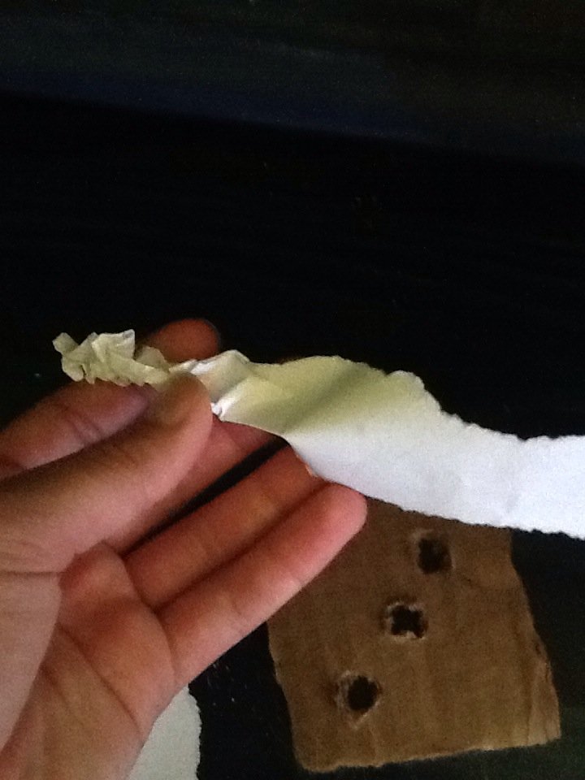

Tossing Toy
MATERIALS: cardboard, scissors, paper/rope
1. Cut a piece of cardboard about 2" x 2". Then cut 3 holes
in a diagonal line accross the square.

2. Cut either 3 strips of paper or rope. I prefer paper because
it makes the toy lighter and easier to throw and around and
destroy, but rope is good if you want the toy to last longer.
If you use paper, scrunch and twist the pieces up so they can
fit through the holes.

2. Poke the pieces of paper or rope through the holes. If you
use rope, tie knots on either side of the cardboard or around
the sides for the end pieces.